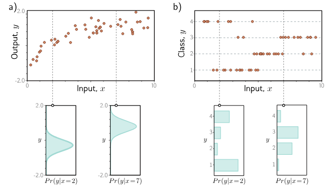

Unless you've been living under a rock for the past couple of years, you would have heard and probably used Ai models like ChatGPT, Gemini or Stable Diffusion. They can write your exams, debug code and create images that look realistic. All these "Ai" models comes under a field called Deep Learning.
Deep Learning comes under Machine Learning which uses multilayered neural networks to do tasks such as classification, regression, etc.. These multilayered neural networks combined together is what we call as a "model". The goal is to create the best possible model which gives the most accurate and "best" results.
So, what do I mean by "best" results? The "best" models are those which have the "best" parameters. Think of parameters as tiny knobs inside the model. Finding the perfect combination of these knobs will create a "best" model. So, how does the model know which way to turn the knobs?
And, that's where the loss function comes in.
A loss function is like a guide for the model which tells it how well it is doing at turning those knobs. It measures how far off the model's predictions are from the actual answers.
If you liked my "knob" analogy, check out my project I did an year ago to explain myself about loss functions and to think like a model.
Maximum Likelihood
We usually think that given an input x, the model just
spits out an output y, kinda like y = f(x),
where f is the model.
And yeah, that's not entirely wrong, because, well, that's what it does in the end!
but there's more to it.
The model doesn't magically know given an input x,
the answer is y.
Instead what it does is, create a conditional probability distribution
Pr(y|x) over a range of possible outputs y given input x.

Figure: (a) Regression and (b) Classification
On the top plot, the orange dots show our data points. The bottom plot shows that the model outputs the probability distribution and and chooses the value as the output where the peak of the distribution comes. The width of the curve is uncertainity.
Source: Understanding Deep Learning: Chapter 5
On the top plot, the orange dots show our data points. The bottom plot shows that the model outputs the probability distribution and and chooses the value as the output where the peak of the distribution comes. The width of the curve is uncertainity.
Source: Understanding Deep Learning: Chapter 5
Well, now, you may have a doubt on how exactly a model f[x, ϕ] compute
a probability distribution.
The solution is really really simple.
What we actually do is, choose a parametric distribution Pr(y|θ)
defined on the output domain y.
So, for example, if the output domain is the set of real numbers,
we might choose univariate normal distribution, else, if the output domain
is a set of K distinct categories (Example: 'Cat', 'Dog', 'Bird', etc..),
we might choose the categorical distribution.
Then, we use the model to predict the parameters of that distribution.
So, in the case of univariate normal distribution, it is μ (mean) and σ2 (variance).
So, instead of computing the distribution itself, we now compute the
model parameters θ for each training example x.
The output y should have high probability given it's conditional
distribution Pr(y|θ).
Now, given I training examples, we have to choose the model
parameters ϕ that can maximize the combined probability.
$$ \begin{align*} \hat{\phi} &= \underset{\phi}{\operatorname{argmax}} \left[ \prod_{i=1}^{I} \operatorname{Pr}(\mathbf{y}_i | \mathbf{x}_i) \right] \\ &= \underset{\phi}{\operatorname{argmax}} \left[ \prod_{i=1}^{I} \operatorname{Pr}(\mathbf{y}_i | \boldsymbol{\theta}_i) \right] \\ &= \underset{\phi}{\operatorname{argmax}} \left[ \prod_{i=1}^{I} \operatorname{Pr}(\mathbf{y}_i | \mathbf{f}[\mathbf{x}_i; \phi]) \right]. \end{align*} $$
The final term is called Maximum Likelihood Criterion.
Before going further, let me explain the terms again.
θ - This is the distribution parameters. So, if we have normal distribution,
it is μ (mean) and σ2 (variance).
ϕ - This is the model parameters which we are going to find to minimize the
loss.
x - Input sample.
y - Output observed.
I - The total number of training examples.
Now, If you are in the Machine Learning domain, you would have heard about
the term i.i.d (independent and identically distributed).
We assume our data are i.i.d, which means,
independent - We multiply all the training examples in the above because of
our independence assumption. We assume each and every sample is independent
of each other.
identically distributed - This means we assume all the training samples
in the current data comes from the same probability distribution.
The total likelihood for our whole dataset is the product of the individual likelihoods. There is just one problem here. Multiplying thousand of small probabilities together will create a ridiculously small number and can cause numerical underflow. So, we introduce log in the equation and convert the multiplcation to addition.
$$ \begin{align*} \hat{\phi} &= \underset{\phi}{\operatorname{argmax}} \left[ \prod_{i=1}^{I} \operatorname{Pr}(\mathbf{y}_i | \mathbf{f}[\mathbf{x}_i; \phi]) \right] \\ &= \underset{\phi}{\operatorname{argmax}} \left[ \log \left( \prod_{i=1}^{I} \operatorname{Pr}(\mathbf{y}_i | \mathbf{f}[\mathbf{x}_i; \phi]) \right) \right] \\ &= \underset{\phi}{\operatorname{argmax}} \left[ \sum_{i=1}^{I} \log \left[ \operatorname{Pr}(\mathbf{y}_i | \mathbf{f}[\mathbf{x}_i; \phi]) \right] \right]. \end{align*} $$
So, why is this allowed? wouldn't it cause some harm?
Actually, no. The logarithm is a monotonically increasing function
which means if a > b, then, log(a) > log(b).
Because of this, the value of ϕ that maximizes the total likelihood
will also maximize the log-likelihood.
One final thing before we start to create our own loss function, whether it's Machine Learning or Business, we generally think of minimizing the loss. So, we convert the maximum log-likelihood criterion to a minimization problem by multiplying by minus one.
$$ \begin{align*} \hat{\phi} &= \underset{\phi}{\operatorname{argmin}} \left[ -\sum_{i=1}^{I} \log \left[ \operatorname{Pr}(\mathbf{y}_i | \mathbf{f}[\mathbf{x}_i; \phi]) \right] \right] \\ &= \underset{\phi}{\operatorname{argmin}} \left[ L[\phi] \right], \end{align*} $$
Now, we have the final loss function L.
Constructing our own loss functions
still in construction...